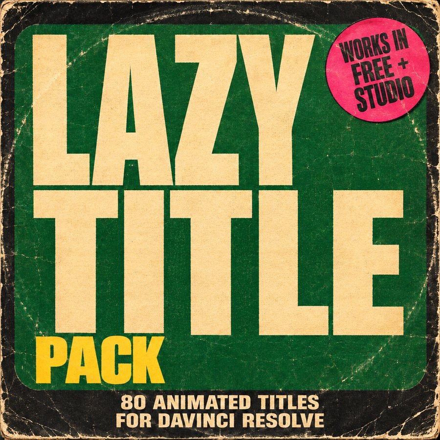

For DaVinci Resolve 21 · Free + Studio
Lazy Title Pack
80 animated titles in five styles. Drag one onto your timeline, type your words in the Inspector, and the intro and outro play by themselves.

PGM · 1920×1080 · 24P
- 80animated titles
- 5categories
- Fontsincluded
- Any lengthintro + outro on every title
Install in a minute
- Open
Fonts (install these), double-click each font and press Install.
- In DaVinci Resolve, double-click
Lazy Title Pack.drfx and confirm.
- Restart Resolve. The titles are in
Edit page › Titles › Lazy Artist, one folder per category.
- Drag a title onto a track above your video.
- Type your words; fonts, colours, position and size are in the Inspector.
- Make the clip as long as you need: the intro stays at the start, the outro at the end.